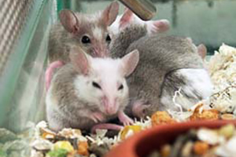

African soft-furred mouse
The Natal multimammate mouse can jump over 18 inches straight up into the air and over 2 feet forward.
- Scientific Name: Natal multimammate mouse
- Average Length: 145mm
- Average Lifespan: 2-3 years
- Habitat: Tropical
The Natal multimammate mouse is a species of rodent in the Muridae family. It is also known as the African soft-furred mouse or African soft-furred rat.